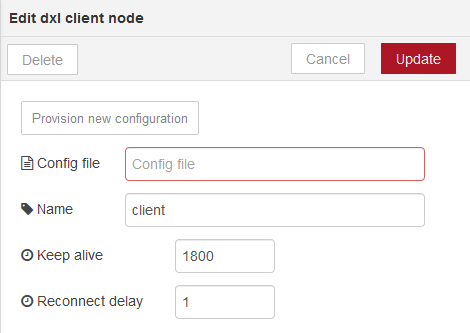
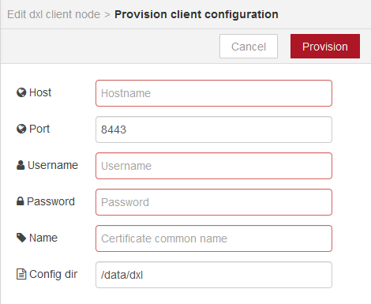
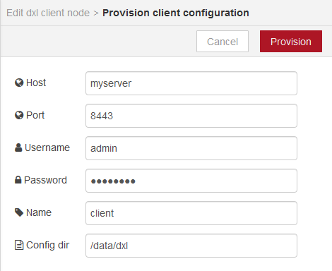
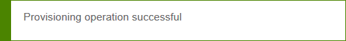
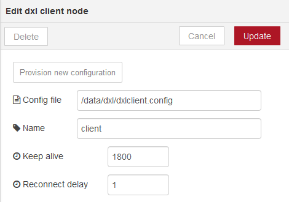
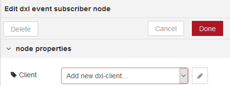
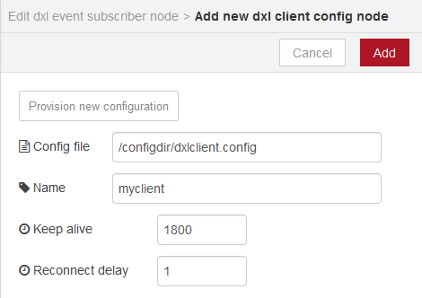

This page demonstrates how to setup a DXL client configuration for Node-RED. The configuration created by following the steps on this page can be used in conjunction with the other samples in the Node-RED OpenDXL contribution package.
Prior to setting up a DXL client configuration in Node-RED, make sure you have completed the client provisioning step.
In order to connect to the DXL fabric, each of the OpenDXL nodes need to be
associated with a dxl client
configuration node. Each
dxl client node is associated with a separate connection to the DXL fabric.
The same dxl client node can be associated with each DXL node which is
intended to share a client connection. Multiple client configuration nodes can
be created, for example, in order to bridge communication among different DXL
fabrics.
The examples in the Node-RED OpenDXL contribution package do not include their
own dxl client configuration node. You can either:
- Import the sample configuration included in the Node-RED OpenDXL contribution package before importing any of the examples.
- Import an example flow first and manually create a configuration node from within the edit dialog of one of the DXL nodes imported from the example.
With the sample configuration approach, the client node will be automatically associated with DXL nodes imported from other example flows later on. The sample configuration approach, therefore, may be a bit simpler for getting flows up and running.
Importing the Sample Configuration
To import the basic-config-example, perform the following steps:
In the upper-right corner of the Node-RED UI, press the
side menubutton.In the menu drop-down list, select
Import→Examples→dxl→basic-config-example.To confirm that the configuration node was loaded properly, choose the
Configuration nodesitem under theside menubutton. An item similar to the following should appear under theconfigtab on the right-side of the screen:
Double-click the
clientnode to open an edit window:
The value in the
Config filetext box determines the DXL client configuration file that the client node will use to determine how to connect to the DXL fabric.If you have already provisioned the Node-RED client configuration, you can change this value to the location of the
dxlclient.configfile and press theUpdatebutton to commit the change. You can then skip the remainder of the steps in this section.If you have not yet provisioned the Node-RED client configuration, you can provision the configuration from the Node-RED user interface by following the steps below.
Click on the
Provision new configurationbutton. This should open up a client provisioning window.
Fill in values for the provisioning properties in the window.
Enter the hostname or IP address of a provisioning server in the
Hostfield and aUsernameandPasswordof a user authorized to perform the provisioning operation. In theNamefield, enter the value which the provisioning server should store in the Common Name (CN) portion of the subject in the client certificate.The
Config dirvalue controls the location on the Node-RED server where the configuration will be stored. The default value for this directory is a subdirectory nameddxlunder the Node-RED user directory. You may want to set this to a unique directory for the client configuration if you intend to use multiple DXL client configuration nodes in Node-RED. See the Node-RED Configuration documentation for more information on the Node-RED user directory.
Press the
Provisionbutton to complete the provisioning operation. If the operation succeeds, a message like the following should appear briefly:
The
clientnode edit window should then reappear, with the location of the newly generateddxlclient.configfile displayed for theConfig fileproperty:
Press the
Updatebutton to store the new client settings.
Manually Creating a Configuration Node
A DXL client configuration node can be created manually from within the edit dialog of another DXL node. For example, you could do the following:
Drag a
dxl event subscribernode from theInputpalette into the flow panel.
Double-click the
dxl subscriber eventnode to open an edit window:
Click on the
pencilicon to the right of theAdd new dxl-client...dropdown entry. This should open up an edit dialog box for a new client configuration node.The value in the
Config filetext box determines the DXL client configuration file that the client node will use to determine how to connect to the DXL fabric.If you have already provisioned the Node-RED client configuration, you can change this value to the location of the
dxlclient.configfile.If you have not yet provisioned the Node-RED client configuration, you can provision the configuration from the Node-RED user interface by clicking on the
Provision new configurationbutton and filling in the provisioning information on the subsequent window which is displayed. For more information on filling out the values on the provisioning configuration window, see the steps in the Manually Creating a Configuration Node section.Once the
Config filehas been selected, enter aNamethat Node-RED can associate with the configuration:
Press the
Addbutton to create the new configuration node. The configuration node will automatically be associated with the new event subscriber node:Note that the
Clientfield on each DXL node is a drop-down list box. A separate list item will appear for each client configuration node which has been defined. A DXL node may be associated with only one client configuration node.